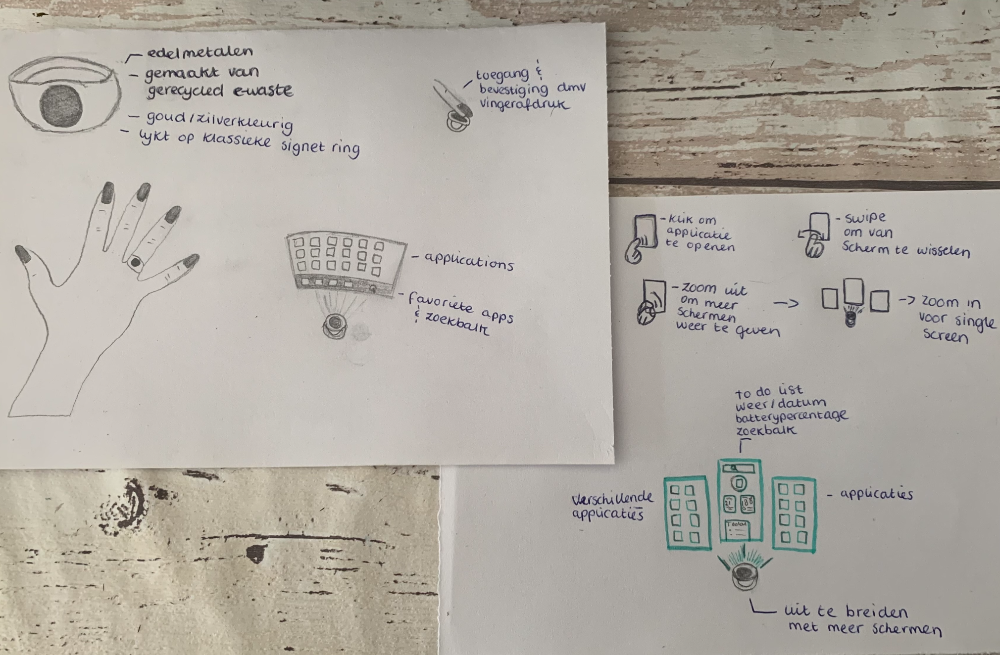

Wearables is technologie welke draagbaar is. Dit kan in of op het lichaam zijn. Hierbij kan gedacht worden aan smart watches welke je meer inzicht in gezondheid kunnen geven. Maar er kan ook gedacht worden aan microchips welke geconsumeerd kunnen worden waarmee brainwaves opgemerkt kunnen worden om elementen met het brein te kunnen besturen.
In de onderstaande topic assignments worden diverse voorbeelden gegeven van zowel Augmented als Virtual Reality.
Voor de eerste topic assignment was het de bedoeling om een beschreven case te kiezen. Ik zelf hebt voor de eerste case gekozen welke het volgende inhoud: "Kun je een interactief draagbaar concept bedenken dat niet in het college is genoemd op basis van een smartphone, maar zonder een regulier 2D-touchscreen of look and feel? Hoe zou je deze frisse, leukere manier van bellen en gebeld worden met draagbare technologie ontwerpen? Hoe werkt het?"
Mijn idee voor dit herontwerp is een ring met vingerafdruk beveiliging welke de mobiele telefoon zal gaan vervangen. De gebruiker activeert de ring door middel van een vingerafdruk. Bij het ontgrendelen van de ring zal er een hologram scherm tevoorschijn komen welke de interface van een telefoon bevat. De gebruiker kan door middel van het hologram scherm en movement sensors de interface van de telefoon gebruiken. De ring kan door middel van bluetooth gelinkt worden met draadloze oordopjes/hoofdtelefoon, zo kan de gebruiker bellen. Ook notificaties kunnen aangekondigd worden door middel van draadloze oordopjes/hoofdtelefoon.
Voor de tweede topic assignment is er gezocht naar projecten die mij aanspreken, welke gebruik maken van wearables. In totaal heb ik drie projecten gevonden welke hieronder zijn geplaatst om te lezen.
Toen ik in 2013 begon met hardlopen was er de Nike+ sensor, dit is een kleine draadloze chip/sensor die je in Nike schoenen kan plaatsen. Er zit onder de inlegzool van de schoen een inkeping waar deze sensor precies in past. De sensor koppelde je in de Nike+ app aan jouw telefoon en zorgde voor precieze resultaten van jouw runs. Het gebruik van deze sensor werkt motiverend zo kreeg je via een melding te horen hoeveel kilometer je had gelopen, hoe snel je deze had gelopen en wat je gemiddelde snelheid is. Terugkijkend naar 2013, was dit echt een geweldige ontwikkeling en had ik geen idee dat ik toen al iets bezat wat onder de term wearable viel.Ik vond het fantastisch dat ik mijn hardloopresultaten precies en secuur werden vastgelegd. Dit motiveerde mij enorm en is zeker een factor geweest in het feit dat ik ben blijven hardlopen.
Mijn Garmin horloge gebruik ik niet alleen voor diverse sporten, ik draag deze het liefste 24 uur per dag. Zo is het een stappenteller, slaap-tracker, hartslagmeter, energiemeter en zo veel meer. Na het sporten kan ik zien hoeveel trainingseffect ik heb behaald en dit zorgt voor betere sportprestaties. Er zitten teveel opties op dit horloge om überhaupt op te noemen, laat staan in 150 woorden te beschrijven. Dit horloge is niet alleen top als activiteitenmeter en daadwerkelijk horloge maar ook een goed hulpmiddel voor mijn ADHD. Wanneer ik mij slecht kan concentreren of een slechte dag heb, kan ik op mijn horloge meestal zien waar dit door komt. Dit kan onder andere komen door een te lage body battery, weinig/slecht slapen, stress, drukte en of weinig bewegen. Ik wil niet meer zonder dit horloge wat betreft sporten en kan niet meer zonder in mijn dagelijkse leven.
Ik heb zelf geen diabetes maar weet door contact met diabetici wel dat het iets is wat nauw in de gaten gehouden moet worden. Mensen met diabetes moeten hun bloedsuikerspiegel stabiel moeten houden om een hypo te vermijden. Voorheen werd dit altijd gedaan door middel van een vingerprik, echter is het ook mogelijk om een draadloze glucosemeter in de huid te plaatsen, deze kan je twee weken laten zitten. Deze glucosemeter ziet eruit als een sticker is ongeveer even groot als een 2 euro munt. De glucosemeter meet de huidige bloedsuikerwaarden in het onderhuidse weefsel vocht en kan een curve van de afgelopen acht uur laten zien via een insulinepomp of telefoon. Ook is het zo mogelijk om alarmen in te stellen. Zo’n draadloze glucosemeter lijkt mij een geweldig hulpmiddel voor diabetici. Althans een mobieler alternatief en minder pijnlijk dan meerdere keren een vingerprik op een dag.
Ik vond dit een leuk onderwerp om meer over te leren. In eerste instantie dacht ik dat ik geen wearables had maar tijdens het doen van research kwam ik er dus achter dat ik in 2013 al een wearable bezat. Ik vond het zo tof om tot die realisatie te komen dat ik vond dat ik hem gewoon moest verwerken in dit portfolio. Het is interessant om te zien hoe zoiets als de Nike sensor zich heeft ontwikkeld naar hele smartwatches welke je kan gebruiken tijdens het sporten. Ook ben ik tijdens HCI steeds benieuwd hoe een topic een impact kan hebben op maatschappelijke problemen. In eerste instantie sta je misschien niet te springen voor een wearable in je lichaam maar als je dan dat voorbeeld voor diabetici neemt, dan zie je dat er toch ook hele mooie oplossingen uit kunnen komen. Ik dacht dat ik moeite zou hebben met de research aangezien je bij wearables toch vaak meteen denkt aan een smartwatch, ring om mee te betalen, een stappenteller, etc. Maar ik was best wel verrast met de uitkomst.